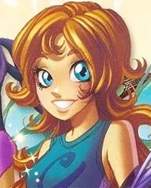

| Возраст | 14 лет |
|---|---|
| Дата Рождения | 13 марта 1991 (Рыбы) |
| Рост | 159 см |
| Цвет волос | Каштановый |
| Цвет глаз | Зеленовато-голубой |
Ирма обладает способностью манипулировать и управлять водой во всех ее формах, будь то жидкость, пар или лед. Ирма способна как направлять потоки воды, так и останавливать их, может создавать различные предметы, манипулируя формой или создавать пузыри с воздухом для путешествия под водой. В мультсериале Ирма способна создавать воду из воздуха и направлять ее на противника. Со временем, когда ее силы подпитались мистической энергией необходимой для создания завесы у Ирмы проявился дар контролировать разум людей. Ирма может замораживать, испарять воду и высасывать ее из живых существ. В зените силы она способна видеть свое будущее и прошлое в осознанных сновидениях. Также Ирма обладает силами стражниц: она умеет летать, телепортироваться и преображаться
Ирма очень оптимистичный, эмоциональный человек с хорошим чувством юмора. Ее можно назвать самой несерьезной чародейкой, потому что она отпускает шутки по любому поводу, но, несмотря на это, она верный друг. Хотя Ирма и шутит без остановки, на нее можно положится и в трудные минуты, она всегда поможет своим друзьям. В трудные минуты она способна проявить даже лидерские качества. Ирма любит быть в центре внимания и любит флиртовать с мальчишками. Еще у этой чародейки самый хороший аппетит, поэтому на промо рисунках ее часто рисуют вместе с печеньем.